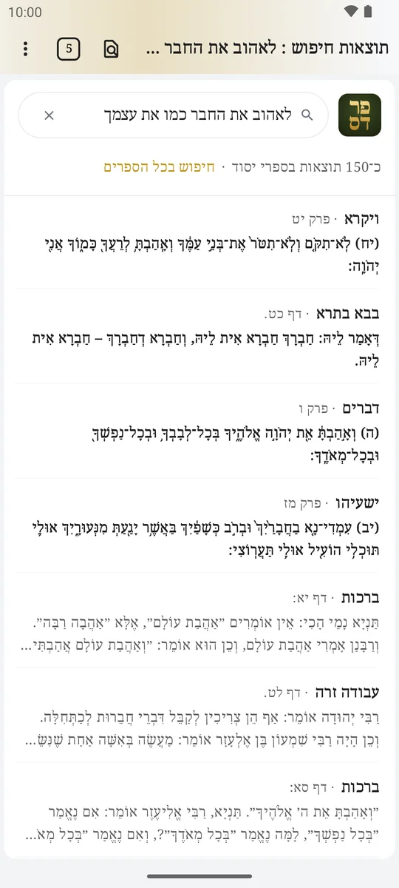
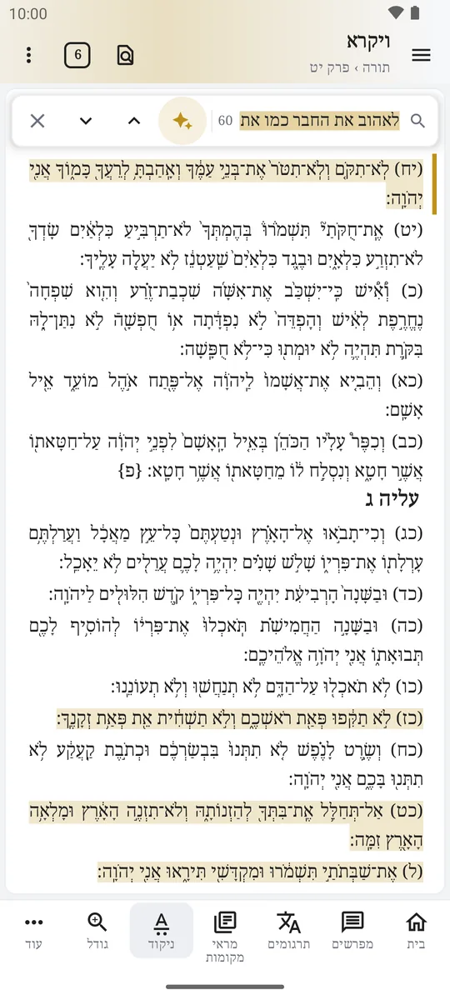

לפי המילים, וגם לפי המשמעות
מקלידים מה שמחפשים, ופרדס מחפש בכל הספרייה. הוא מוצא גם מקורות שאומרים את אותו דבר במילים אחרות.



הטקסט במרכז, המפרשים לצידו
ניקוד וטעמים, ובלחיצה המפרשים, התרגומים והמקורות של כל פסוק. במסך רחב הכול פתוח זה לצד זה.


זמנים, לוח ולימוד יומי
זמני היום לפי המקום שלכם, לוח עברי, מולד ומעגל השנה, וּווידג'טים למסך הבית.


כל מה שצריך ללימוד
- לשוניותכמה ספרים פתוחים יחד, כמו בדפדפן.
- הערות והדגשותמסמנים וכותבים ישר על הטקסט.
- מצב כההללימוד בלילה, בלי לסנוור.
- מתעדכן לבדגרסה חדשה מותקנת מתוך פרדס, באישורכם.
- גם בכרטיס זיכרוןבטלפון, הספרייה יכולה לשבת בכרטיס SD.
- גם בטלפון קטןהמסכים מתאימים את עצמם גם ל־3 אינץ'.
הורדת פרדס
חינם, לכל מכשיר. בוחרים את המכשיר שלכם.
גרסה … · … · אנדרואיד 8 ומעלה
פותחים את הקובץ שהורד. כשאנדרואיד שואל אם לאפשר התקנה מהדפדפן, מאשרים. עוד
גרסה … · … · Windows 10 ו־11
אם Windows מזהיר שהקובץ לא מוכר, לוחצים מידע נוסף ואז הפעל בכל זאת. עוד
גרסה … · … · macOS 12 ומעלה
גוררים את פרדס לתיקיית היישומים. בפתיחה הראשונה מאשרים אותו בהגדרות המערכת › פרטיות ואבטחה. עוד
והספרים? בפתיחה הראשונה פרדס מוריד אותם, כ־5.5 ג״ב, וצריך כ־15 ג״ב פנויים. אין אינטרנט, או שאין מספיק מקום? יש עוד דרכים